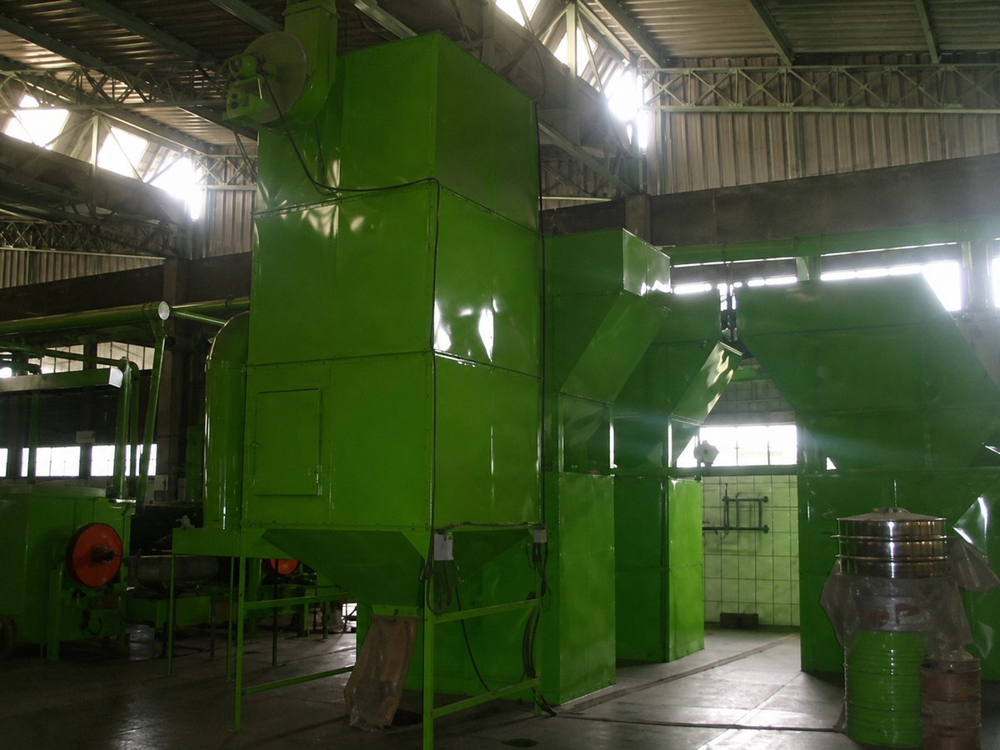
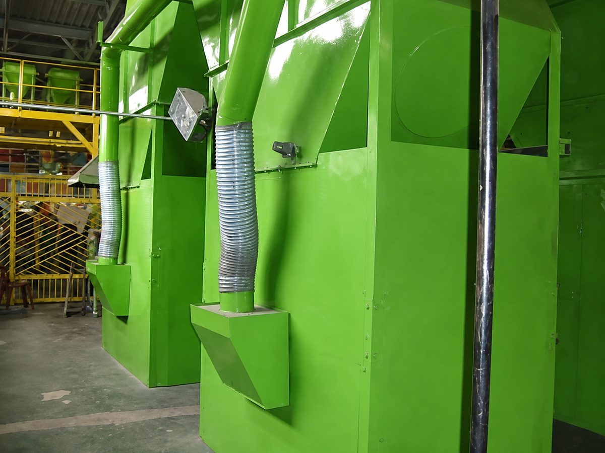
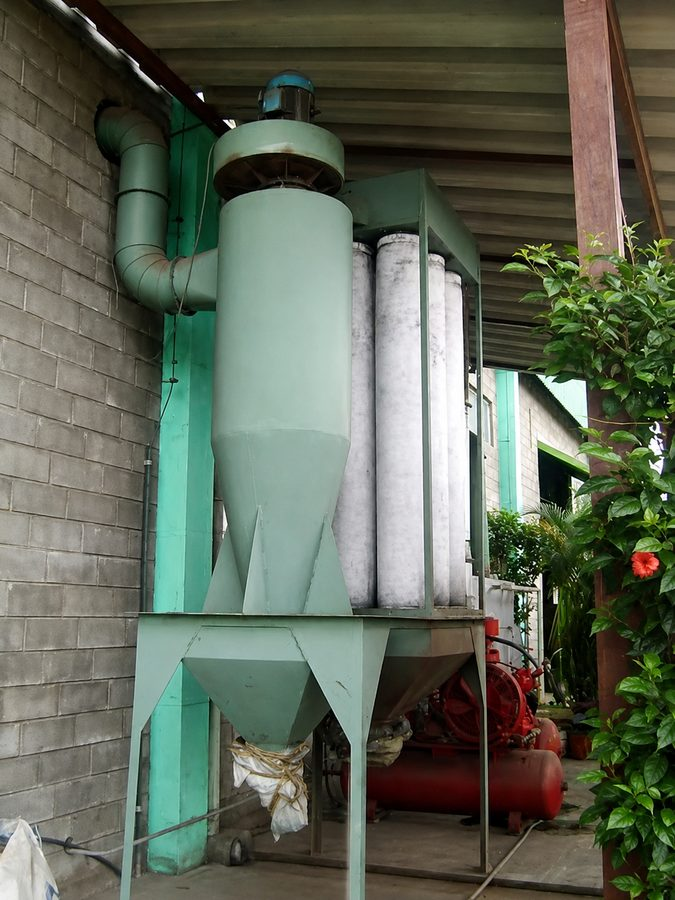
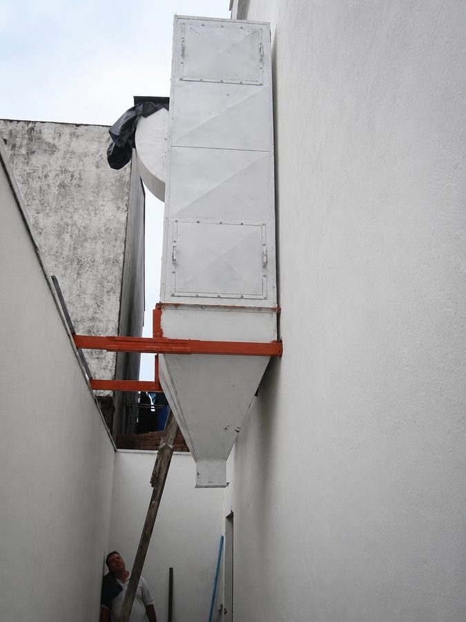
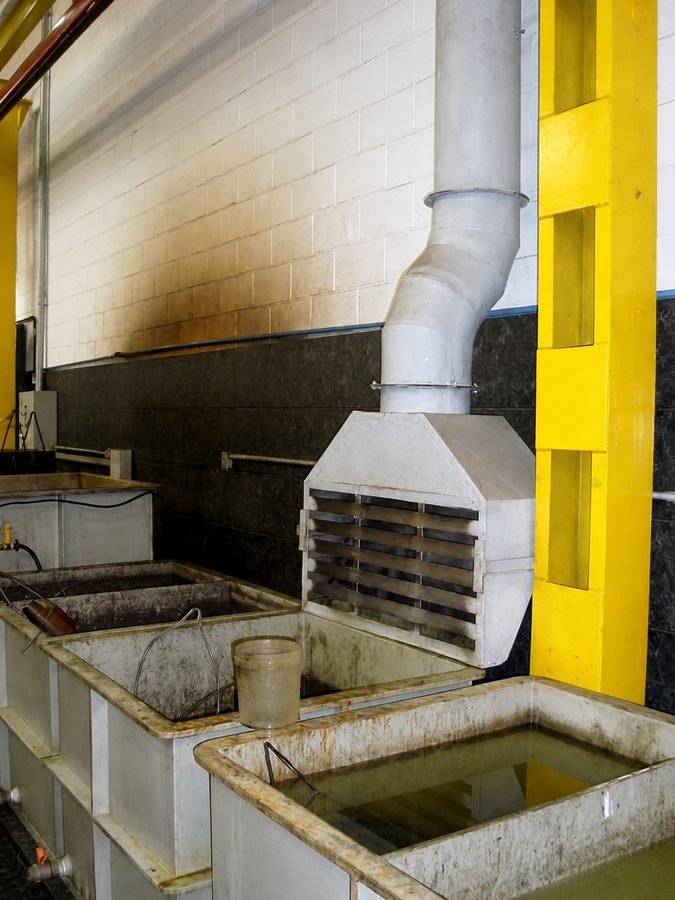
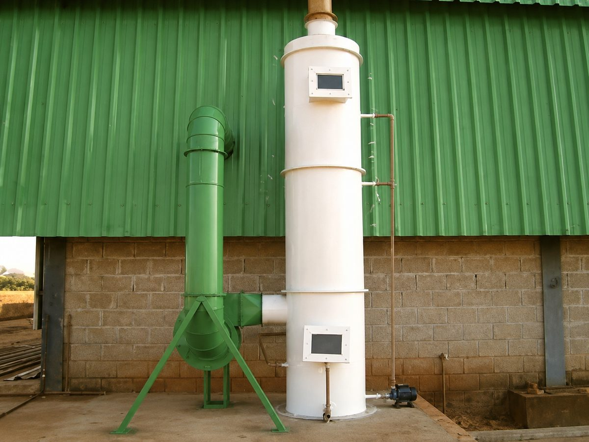
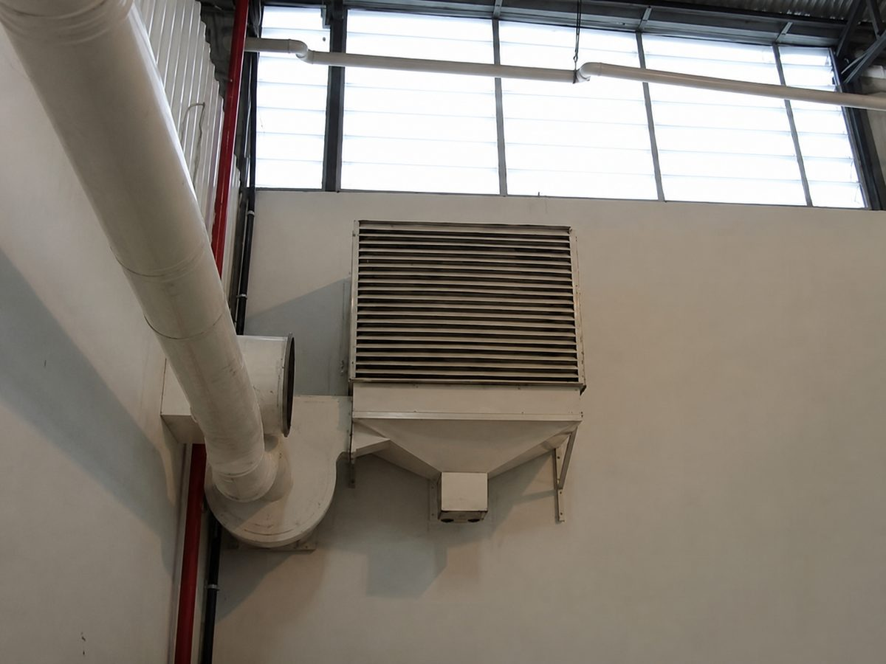

✣
Ventilação
Soluções para circulação e renovação do ar em ambientes industriais.
Soluções industriais sob medida
Experiência de mais de 23 anos no ramo, garantindo que nossos produtos e serviços tenham a mais alta qualidade e tecnologia.
Produtos e serviços
Atendimento para empresas, indústrias, galpões, cozinhas industriais e ambientes que precisam de melhor renovação do ar.
Soluções para circulação e renovação do ar em ambientes industriais.
Equipamentos para tratamento do ar e melhoria das condições do ambiente.
Projeto, fabricação, instalação e manutenção de sistemas de exaustão.
Sistemas para captação, ventilação e controle em processos de pintura.
Equipamentos para retenção de partículas e controle de poluentes.
Soluções para captação e coleta de pó em linhas de produção.
Sobre a WPS
A WPS - Ventilação e Comércio atua com fabricação, instalação, manutenção e soluções sob medida para sistemas industriais de ventilação, exaustão e captação.
Com experiência no ramo, a empresa trabalha com foco em qualidade, tecnologia, segurança e atendimento personalizado para cada necessidade.
Portfólio
Conheça alguns exemplos de equipamentos, instalações e sistemas atendidos pela WPS.

Equipamento industrial com dutos e captação.

Captação e filtragem em ambiente produtivo.

Equipamento para tratamento e renovação do ar.

Sistema instalado em área externa.

Captação localizada em área de produção.

Solução externa para ambiente industrial.

Duto e veneziana para renovação do ar.
Vídeos
Veja alguns registros de soluções desenvolvidas pela WPS em ventilação, exaustão, coletagem de pó e lavadores de ar.

Solução em fiberglass para sistema de exaustão industrial.
Assistir no YouTube
Equipamento para captação, exaustão e coletagem de pó em ambiente industrial.
Assistir no YouTube
Demonstração do funcionamento do lavador com saída neutralizada.
Assistir no YouTubeDiferenciais
Tradição, conhecimento técnico e confiança em soluções industriais.
Soluções personalizadas conforme a necessidade de cada cliente.
Produtos e serviços com alto padrão de acabamento e desempenho.
Equipe preparada para instalação, manutenção e melhorias nos sistemas.
Solicite seu orçamento
Fale com a WPS e receba atendimento para sua necessidade.